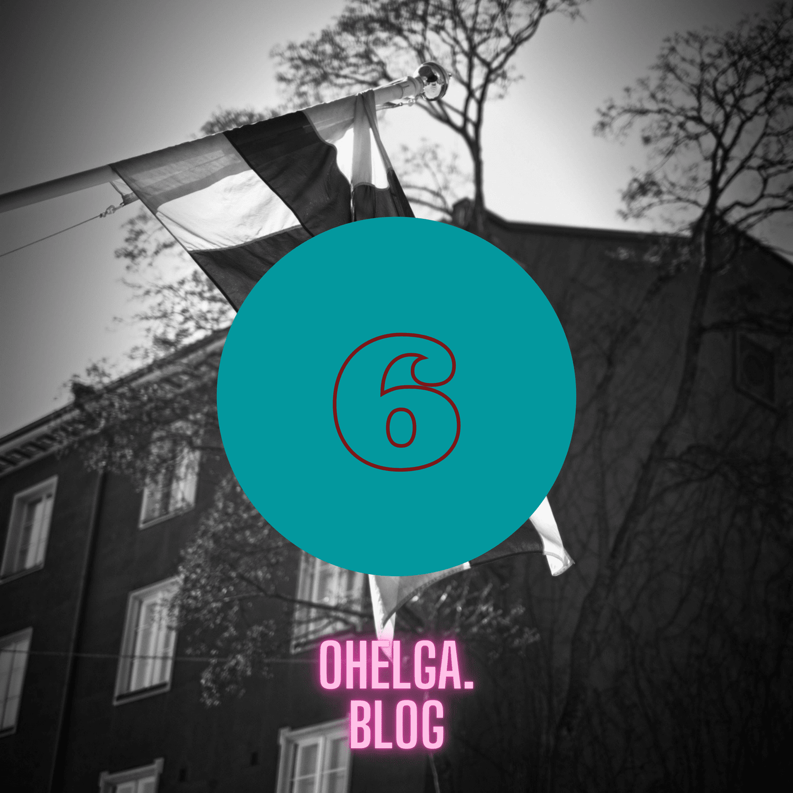

Luukku 6: Idag föreslår vi sällskap till groggen som bäst avnjuts framför den öppna spisen.
Idag föreslår vi sällskap till groggen som bäst avnjuts framför den öppna spisen. Ääni pillissä Suomen Thillissä!
Linkit kappaleeseen:
Apple Music:
på Spotify:

Kommentit / Kommentarer (4)
<p>Som jag sagt tidigare, det ska vara skolade tenorer som gör detta, då är man trygg. Klockren och bombsäker tolkning var detta, han plockade de höga tonerna utan att lyssnaren behövde oroa sig. Det verkade vara en direkt kopia av Pavarottis version i arrangemangen dock, med nyckelharpa (?). Och Pavarotti har ju en alldeles särskild klang i rösten, men även Jyrki Niskanen får gärna serenadera under mitt fönster.</p>
<p>He va int roko. Orkade lyssna denna till slut, kanske för att jag visste att han skulle klara TONEN. </p>
<p>Men det blev lite öppet hur bra han klarade TONEN. Blev det inte? (Om man inte orkar lyssna till slut, så kan man spola framåt till TONEN.)</p>
<p>Niskanen under fönstret, minsann! Det vore något för nattsömnen.</p>